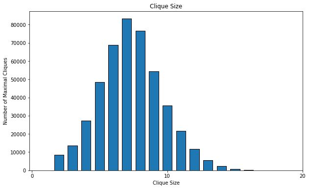

Results
Test Case Email-Enron
Number of Maximal Cliques Found: 226859
Number of Vertices: 36692
Number of Edges: 367662
Execution Time: MERA WALA

Test Case As-Skitter
Number of Maximal Cliques Found: 37322355
Number of Vertices: 1696415
Number of Edges: 11095298
Execution Time: MERA WALA
Test Case Wiki-Vote
Number of Maximal Cliques Found: 459002
Number of Vertices: 7115
Number of Edges: 103689
Execution Time: MERA